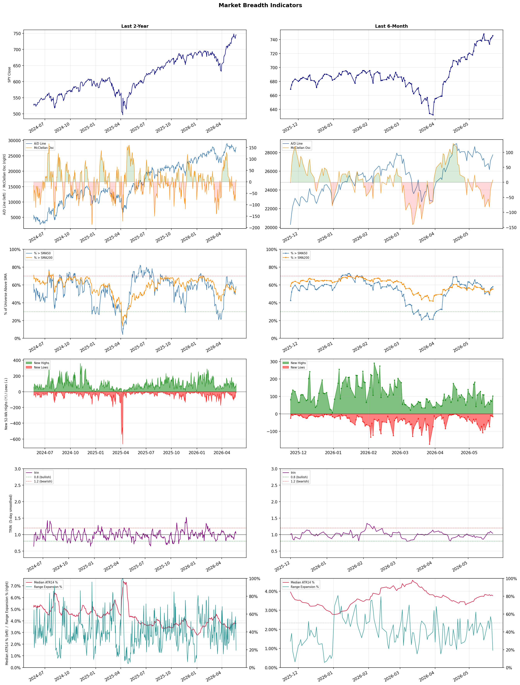

A daily research map of market breadth, industry rotation, and technical setups
| Item | Read |
|---|---|
| Regime | Selective Risk-On |
| Risk posture | Selective |
| Indices | QQQ 717.54 (+0.4% today) |
| Universe | 1,707 stocks tracked · 102 new 52-week highs · 30 active swing setups |
| Breadth | 58.0% of tracked stocks are above SMA50 — neutral range, new highs exceed new lows (102 vs 16) |
| Leadership | Computer Hardware, Semiconductors, and Solar |
| Weakest groups | Furnishings, Fixtures & Appliances, Packaged Foods, and Industrial Distribution |
Use this report to prioritize research and chart review; validate entries, stops, liquidity, earnings, and risk before acting.
| Item | Read |
|---|---|
| Primary read | Selective Risk-On regime with Selective risk posture. |
| Research queue | SNDK, STX, IONQ, QBTS, RGTI |
| Leadership focus | Computer Hardware, Semiconductors, and Solar |
| Caution list | Furnishings, Fixtures & Appliances, Packaged Foods, and Industrial Distribution |
| Review prompt | Check extension risk, chart location, fundamentals, valuation, and earnings before using any research row. |
| Item | Read |
|---|---|
| Primary read | 0 active risk warnings; use screen output as watchlist input only. |
| Bullish screens | DELL, ALAB, AMD, ARM, ENPH |
| Bearish screens | none |
| Alerts / levels | Automated trigger, stop, ATR, liquidity, reward/risk, and event-risk levels are pending future enrichment. |
| Review prompt | Open the linked chart, define trigger and invalidation, then check liquidity and event risk independently. |
Risk Posture: Selective — screen backdrop supports selective research in leading industries
Metric context: McClellan below -50 = elevated selling pressure; below -100 = washout territory. Range Expansion = share of stocks with daily range above their 20-day average. Signal Density = share of tracked names appearing in signal screens.
| Breadth Date | % > SMA50 | % > SMA200 | New Highs | New Lows | McClellan | Median Range | Avg Range | Median ATR14 | Range Expansion | Signal Density |
|---|---|---|---|---|---|---|---|---|---|---|
| 2026-05-22 | 58.0% | 55.4% | 102 | 16 | 7.9 | 2.5% | 3.0% | 3.8% | 19.3% | 2.3% |

Prior comparison date: May 21, 2026
| Metric | Prior | Current | Change |
|---|---|---|---|
| Regime | Selective Risk-On | Selective Risk-On | unchanged |
| Risk Posture | Selective | Selective | unchanged |
| % > SMA50 | 56.8% | 58.0% | +1.2 pts |
| % > SMA200 | 55.0% | 55.4% | +0.5 pts |
| New Highs | 71 | 102 | +31 |
| New Lows | 12 | 16 | -4 |
Top-10 industries entering: Steel. Top-10 industries leaving: Trucking. New multi-signal long setups: AMD, ASML, AXTI, CORZ, DELL, GTX, HLIT, LUNR, MKSI, NOK. New multi-signal short setups: none.
| Status | Tickers | Read |
|---|---|---|
| Added | AMD, ASML, AXTI, CORZ, DELL, GTX, HLIT, LUNR | New technical screen matches vs prior report. |
| Removed | ARDX, ASTS, BE, GFS, GH, HST, LQDA, LRCX | No longer present in today's technical screen matches. |
| Still Active | ALAB, ARM, BMO, BNS, CM, DAL, ENB, ENPH | Appeared in both current and prior reports. |
| Promoted | ENPH | Model Screen Score improved by at least 15 points. |
| Downgraded | none | Model Screen Score declined by at least 15 points. |
| Direction | Industry | Prior Rank | Current Rank | Days | Rank Change |
|---|---|---|---|---|---|
| Rose | Solar | 98 | 3 | 35 | +95 |
| Rose | Software - Infrastructure | 96 | 12 | 42 | +84 |
| Rose | Aerospace & Defense | 90 | 15 | 28 | +75 |
| Rose | Healthcare Plans | 67 | 5 | 35 | +62 |
| Rose | REIT - Office | 78 | 20 | 35 | +58 |
| Direction | Industry | Prior Rank | Current Rank | Days | Rank Change |
|---|---|---|---|---|---|
| Fell | Apparel Manufacturing | 7 | 79 | 35 | -72 |
| Fell | Gold | 21 | 92 | 35 | -71 |
| Fell | Industrial Distribution | 30 | 96 | 42 | -66 |
| Fell | Building Products & Equipment | 29 | 91 | 28 | -62 |
| Fell | Farm & Heavy Construction Machinery | 11 | 72 | 42 | -61 |
| Industry | Rank | ETF | 7d | 14d | 28d | 42d | Chg 42d | Size | 20D | 60D | Composite | Active Setups |
|---|---|---|---|---|---|---|---|---|---|---|---|---|
| Computer Hardware | 1 | XLK | 7 | 2 | 6 | 39 | +38 | 14 | 30.1% | 50.2% | 0.969 | 2 |
| Semiconductors | 2 | SOXX | 1 | 1 | 2 | 8 | +6 | 36 | 27.6% | 88.9% | 0.967 | 3 |
| Solar | 3 | TAN | 9 | 26 | 87 | 78 | +75 | 8 | 29.1% | 22.9% | 0.921 | 2 |
| Communication Equipment | 4 | IYZ | 5 | 7 | 4 | 2 | -2 | 17 | 15.5% | 53.4% | 0.911 | 2 |
| Healthcare Plans | 5 | IHF | 6 | 6 | 13 | 57 | +52 | 11 | 21.1% | 29.8% | 0.890 | 2 |
| Steel | 6 | SLX | 15 | 12 | 20 | 29 | +23 | 6 | 9.1% | 9.1% | 0.887 | 1 |
| Electrical Equipment & Parts | 7 | XLI | 10 | 5 | 8 | 34 | +27 | 11 | 11.1% | 30.0% | 0.882 | 1 |
| Electronic Components | 8 | XLK | 8 | 4 | 3 | 7 | -1 | 9 | 14.5% | 41.7% | 0.882 | 2 |
| REIT - Hotel & Motel | 9 | XLRE | 18 | 9 | 16 | 16 | +7 | 7 | 8.7% | 9.3% | 0.861 | 0 |
| Semiconductor Equipment & Materials | 10 | SOXX | 3 | 3 | 1 | 1 | -9 | 18 | 5.4% | 46.0% | 0.854 | 3 |
Rank columns (7d–42d) show the industry's rank that many trading days ago — lower is stronger. Chg 42d = rank change vs 42 trading days ago — positive means the industry moved up. 20D and 60D are the mean stock return within the industry over that period. Active Setups: count of today's swing-trade candidates from this industry appearing across all signal screens.
| Industry | Rank | ETF | 7d | 14d | 28d | 42d | Chg 42d | Size | 20D | 60D | Composite | Active Setups |
|---|---|---|---|---|---|---|---|---|---|---|---|---|
| Furnishings, Fixtures & Appliances | 98 | N/A | 98 | 98 | 77 | 91 | -7 | 7 | -13.2% | -24.3% | 0.020 | 0 |
| Packaged Foods | 97 | XLP | 95 | 96 | 97 | 92 | -5 | 17 | -7.7% | -20.8% | 0.088 | 1 |
| Industrial Distribution | 96 | N/A | 92 | 83 | 56 | 30 | -66 | 6 | -11.5% | -13.8% | 0.117 | 0 |
| Uranium | 95 | URA | 85 | 39 | 67 | 87 | -8 | 6 | -12.4% | -17.2% | 0.131 | 0 |
| Specialty Retail | 94 | XRT | 97 | 84 | 84 | 89 | -5 | 15 | -7.9% | -15.9% | 0.152 | 1 |
| Building Materials | 93 | XHB | 77 | 79 | 51 | 38 | -55 | 5 | -8.6% | -14.6% | 0.164 | 0 |
| Gold | 92 | GDX | 78 | 90 | 55 | 65 | -27 | 31 | -9.2% | -27.7% | 0.174 | 1 |
| Building Products & Equipment | 91 | XHB | 79 | 68 | 29 | 58 | -33 | 12 | -8.1% | -10.7% | 0.177 | 0 |
| Residential Construction | 90 | ITB | 87 | 82 | 37 | 66 | -24 | 7 | -6.8% | -12.2% | 0.182 | 0 |
| Household & Personal Products | 89 | XLP | 89 | 80 | 93 | 95 | +6 | 12 | -4.8% | -17.6% | 0.185 | 1 |
Rank columns (7d–42d) show the industry's rank that many trading days ago — lower is stronger. Chg 42d = rank change vs 42 trading days ago — positive means the industry moved up. 20D and 60D are the mean stock return within the industry over that period. Active Setups: count of today's swing-trade candidates from this industry appearing across all signal screens.
These are research candidates from top-ranked stocks, capped at five names per industry to avoid over-concentration. Returns shown (60D, 120D, 250D) are historical — they reflect where prices have already moved, not forward expectations. Extension Risk flags names that may require extra patience or a better entry point. They are not buy signals.
Chart: TV = TradingView chart (opens in browser); PDF = local chart file (if downloaded).
| Ticker | Name | Industry | Industry Rank | Market Cap | 60D Hist | 120D Hist | 250D Hist | Extension Risk | Research Reason | Chart |
|---|---|---|---|---|---|---|---|---|---|---|
| SNDK | SanDisk | Computer Hardware | 1 | 77.8B | 126.8% | 562.3% | 3866.4% | Very extended | Top-ranked in industry; very extended | TV · PDF |
| STX | Seagate Technology | Computer Hardware | 1 | 76.9B | 98.4% | 193.7% | 620.9% | Extended | Top-ranked in industry; extended | TV · PDF |
| IONQ | IonQ Inc | Computer Hardware | 1 | 13.1B | 55.7% | 29.1% | 39.3% | Extended | Top-ranked in industry; extended | TV · PDF |
| QBTS | D-Wave Quantum | Computer Hardware | 1 | 6.8B | 46.0% | 29.7% | 56.4% | Constructive | Top-ranked in industry | TV · PDF |
| RGTI | Rigetti Computing | Computer Hardware | 1 | 5.6B | 41.7% | 3.3% | 88.4% | Constructive | Top-ranked in industry | TV · PDF |
| MXL | MaxLinear | Semiconductors | 2 | 1.4B | 453.3% | 536.9% | 757.0% | Very extended | Top-ranked in industry; very extended | TV · PDF |
| NVTS | Navitas Semiconductor | Semiconductors | 2 | 1.9B | 207.6% | 234.7% | 563.3% | Very extended | Top-ranked in industry; very extended | TV · PDF |
| HIMX | Himax Technologies | Semiconductors | 2 | 1.3B | 180.2% | 178.3% | 156.3% | Very extended | Top-ranked in industry; very extended | TV · PDF |
| VSH | Vishay Intertechnology | Semiconductors | 2 | 2.3B | 142.9% | 245.6% | 239.7% | Very extended | Top-ranked in industry; very extended | TV · PDF |
| QCOM | Qualcomm | Semiconductors | 2 | 144.8B | 63.6% | 41.7% | 63.8% | Extended | Top-ranked in industry; extended | TV · PDF |
| SHLS | Shoals Technologies | Solar | 3 | 956.1M | 56.1% | 18.1% | 115.9% | Extended | Top-ranked in industry; extended | TV · PDF |
| SEDG | SolarEdge Technologies | Solar | 3 | 2.0B | 53.3% | 69.6% | 270.8% | Extended | Top-ranked in industry; extended | TV · PDF |
| ENPH | Enphase Energy | Solar | 3 | 5.3B | 39.9% | 121.9% | 61.5% | Extended | Top-ranked in industry; extended | TV · PDF |
| FSLR | First Solar | Solar | 3 | 20.3B | 28.9% | -5.5% | 62.8% | Constructive | Top-ranked in industry | TV · PDF |
| CSIQ | Canadian Solar | Solar | 3 | 1.1B | -5.3% | -30.5% | 92.7% | Lagging | Top-ranked in industry; lagging | TV · PDF |
| NOK | Nokia Oyj | Communication Equipment | 4 | 43.2B | 106.3% | 154.4% | 189.7% | Very extended | Top-ranked in industry; very extended | TV · PDF |
| EXTR | Extreme Networks | Communication Equipment | 4 | 1.9B | 82.2% | 46.3% | 66.3% | Extended | Top-ranked in industry; extended | TV · PDF |
| CSCO | Cisco | Communication Equipment | 4 | 310.6B | 54.2% | 56.5% | 90.8% | Extended | Top-ranked in industry; extended | TV · PDF |
| HLIT | Harmonic | Communication Equipment | 4 | 1.0B | 44.3% | 59.0% | 70.0% | Constructive | Top-ranked in industry | TV · PDF |
| ASTS | AST SpaceMobile | Communication Equipment | 4 | 34.2B | 23.4% | 88.4% | 339.3% | Constructive | Top-ranked in industry | TV · PDF |
These are technical screen matches from existing signal files. They are not trade recommendations. Trigger, stop, ATR, liquidity, reward/risk, and event risk still require separate validation until those inputs are available.
Model Screen Score is weighted by signal count, industry rank, freshness, and setup type. It is not a probability of profit, expected return, or suitability rating. Industry cap: max 3 candidates per industry.
Signal glossary: Momentum Pullback = stock in an uptrend that has pulled back 10–30% and shows re-entry conditions. MA Compression = short- and long-term moving averages converging, often preceding a directional move. Three-Day Up/Down = three consecutive closes in the same direction. New 52Wk High/Low = price reached a new annual extreme.
Chart: TV = TradingView chart (opens in browser); PDF = local chart file (if downloaded).
| Ticker | Industry | Setups | Close | Industry Rank | Signal Count | Model Screen Score | Reason | Chart |
|---|---|---|---|---|---|---|---|---|
| DELL | Computer Hardware | New 52Wk High; Three-Day Up | 295.19 | 1 | 2 | 100 | Multi-signal; top industry breakout | TV · PDF |
| ALAB | Semiconductors | New 52Wk High; Three-Day Up | 306.88 | 2 | 2 | 100 | Multi-signal; top industry breakout | TV · PDF |
| AMD | Semiconductors | New 52Wk High; Three-Day Up | 467.51 | 2 | 2 | 100 | Multi-signal; top industry breakout | TV · PDF |
| ARM | Semiconductors | New 52Wk High; Three-Day Up | 306.51 | 2 | 2 | 100 | Multi-signal; top industry breakout | TV · PDF |
| ENPH | Solar | New 52Wk High; Three-Day Up | 64.03 | 3 | 2 | 100 | Multi-signal; top industry breakout | TV · PDF |
| ERIC | Communication Equipment | New 52Wk High; Three-Day Up | 13.50 | 4 | 2 | 93 | Multi-signal; top industry breakout | TV · PDF |
| HLIT | Communication Equipment | New 52Wk High; Three-Day Up | 15.20 | 4 | 2 | 93 | Multi-signal; top industry breakout | TV · PDF |
| NOK | Communication Equipment | New 52Wk High; Three-Day Up | 15.47 | 4 | 2 | 93 | Multi-signal; top industry breakout | TV · PDF |
| TTMI | Electronic Components | New 52Wk High; Three-Day Up | 189.92 | 8 | 2 | 85 | Multi-signal; top industry breakout | TV · PDF |
| ASML | Semiconductor Equipment & Materials | New 52Wk High; Three-Day Up | 1632.90 | 10 | 2 | 85 | Multi-signal; top industry breakout | TV · PDF |
| AXTI | Semiconductor Equipment & Materials | New 52Wk High; Three-Day Up | 140.83 | 10 | 2 | 85 | Multi-signal; top industry breakout | TV · PDF |
| RXO | Trucking | New 52Wk High; Three-Day Up | 24.37 | 11 | 2 | 85 | Multi-signal; new-high strength | TV · PDF |
| CORZ | Software - Infrastructure | New 52Wk High; Three-Day Up | 25.26 | 12 | 2 | 85 | Multi-signal; new-high strength | TV · PDF |
| NTAP | Software - Infrastructure | New 52Wk High; Three-Day Up | 139.36 | 12 | 2 | 85 | Multi-signal; new-high strength | TV · PDF |
| PANW | Software - Infrastructure | New 52Wk High; Three-Day Up | 260.58 | 12 | 2 | 85 | Multi-signal; new-high strength | TV · PDF |
| ENB | Oil & Gas Midstream | New 52Wk High; Three-Day Up | 58.04 | 14 | 2 | 85 | Multi-signal; new-high strength | TV · PDF |
| PAA | Oil & Gas Midstream | New 52Wk High; Three-Day Up | 24.15 | 14 | 2 | 85 | Multi-signal; new-high strength | TV · PDF |
| TRP | Oil & Gas Midstream | New 52Wk High; Three-Day Up | 70.91 | 14 | 2 | 85 | Multi-signal; new-high strength | TV · PDF |
| LUNR | Aerospace & Defense | New 52Wk High; Three-Day Up | 38.26 | 15 | 2 | 85 | Multi-signal; new-high strength | TV · PDF |
| BMO | Banks - Diversified | New 52Wk High; Three-Day Up | 160.93 | 19 | 2 | 77 | Multi-signal; new-high strength | TV · PDF |
| BNS | Banks - Diversified | New 52Wk High; Three-Day Up | 79.78 | 19 | 2 | 77 | Multi-signal; new-high strength | TV · PDF |
| CM | Banks - Diversified | New 52Wk High; Three-Day Up | 115.49 | 19 | 2 | 77 | Multi-signal; new-high strength | TV · PDF |
| GS | Capital Markets | New 52Wk High; Three-Day Up | 996.73 | 22 | 2 | 77 | Multi-signal; new-high strength | TV · PDF |
| MS | Capital Markets | New 52Wk High; Three-Day Up | 201.03 | 22 | 2 | 77 | Multi-signal; new-high strength | TV · PDF |
| LION | Entertainment | New 52Wk High; Three-Day Up | 14.95 | 23 | 2 | 77 | Multi-signal; new-high strength | TV · PDF |
| WMG | Entertainment | New 52Wk High; Three-Day Up | 34.72 | 23 | 2 | 77 | Multi-signal; new-high strength | TV · PDF |
| MKSI | Scientific & Technical Instruments | New 52Wk High; Three-Day Up | 320.62 | 25 | 2 | 77 | Multi-signal; new-high strength | TV · PDF |
| KRG | REIT - Retail | New 52Wk High; Three-Day Up | 27.03 | 34 | 2 | 70 | Multi-signal; new-high strength | TV · PDF |
| DAL | Airlines | New 52Wk High; Three-Day Up | 76.14 | 42 | 2 | 65 | Multi-signal; new-high strength | TV · PDF |
| GTX | Auto Parts | New 52Wk High; Three-Day Up | 33.29 | 45 | 2 | 65 | Multi-signal; new-high strength | TV · PDF |
How To Use This Report
| Use | Purpose |
|---|---|
| Market map | Start with breadth, regime, risk warnings, and what changed since the prior report. |
| Industry scan | Use leading, deteriorating, rising, and declining industries to focus research. |
| Research queue | Treat long-term candidates as names for deeper fundamental, valuation, and chart review. |
| Technical review | Treat bullish and bearish screen matches as watchlist inputs that require independent trigger, stop, liquidity, and event-risk checks. |
| Source follow-up | Use chart links and source files to verify raw inputs before relying on any row. |
What This Report Is Not
| Not | Meaning |
|---|---|
| Investment advice | The report does not evaluate personal objectives, risk tolerance, tax situation, account type, or suitability. |
| Buy/sell recommendation | Named tickers are research candidates or screen matches, not recommendations to transact. |
| Price target | The report does not provide fair value estimates, targets, or expected returns. |
| Trade plan | Trigger, stop, sizing, reward/risk, liquidity, and event-risk review remain separate user work. |
| Performance claim | Model Screen Score is not validated historical performance or a forecast of future results. |
| Item | Note |
|---|---|
| Version | Daily Report Methodology v1 |
| Model Screen Score | Screen-fit rank based on signal count, industry rank, freshness, and setup type. |
| Not predictive proof | The score is not expected return, probability of profit, historical validation, or suitability analysis. |
| Industry ranks | Composite industry ranks use existing daily ranking outputs and historical rank columns when available. |
| Research candidates | Long-term rows are research candidates from ranked stocks and leading industries, with historical returns labeled as historical only. |
| Technical matches | Bullish and bearish rows are screen matches requiring independent chart, trigger, stop, liquidity, and event-risk review. |
| Source | Status | Rows | Path |
|---|---|---|---|
| Market breadth | present | 1256 | breadth_20260522.csv |
| Industry composite rankings | present | 98 | all_industry_composite_20260522.csv |
| Top ranked stocks | present | 137 | top_ranked_composite_20260522.csv |
| All ranked stocks | present | 1707 | all_stocks_composite_sorted_20260522.csv |
| Top momentum pullbacks | present | 1803 | top_momentum_pullbacks_20260522.csv |
| MA compression | present | 1803 | ma_compression_stocks_20260522.csv |
| Three-day up/down | present | 259 | three_day_up_down_stocks_20260522.csv |
| New 52-week members | present | 118 | breadth_new_52wk_members_20260522.csv |
This report is generated from automated technical screens and is for informational and research purposes only. It is not investment advice, a solicitation, or a recommendation to buy or sell any security. Past performance is not indicative of future results. You are solely responsible for your own investment decisions. Consult a licensed financial advisor before acting on any information herein.